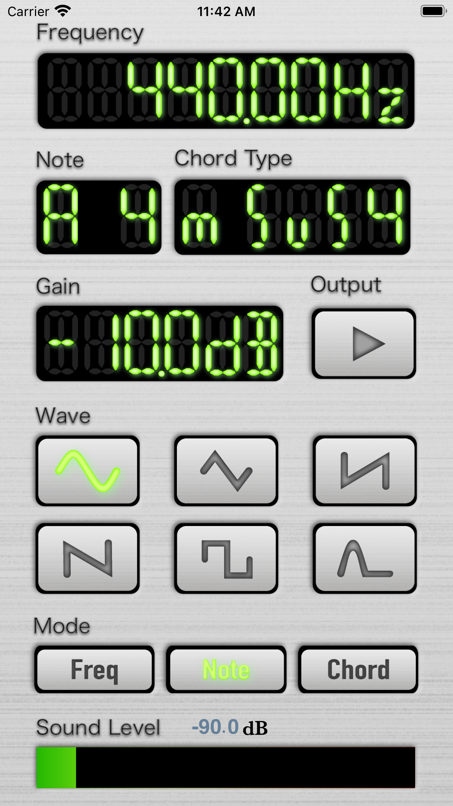

Launching the app will cause the main screen to appear shown in the figure1.
It has three modes which is Frequency, Note and Chord. In Frequency mode, you can output wave at frequency on the frequency
display with the wave form which can be selected by the wave button. In Note mode, you can output wave at note on the note display
with the wave form which can be selected by the wave button. In chord mode, you can output wave with base note on the note display
and chord type on the chord type display with the wave form which can be selected by the wave button.

Figure1. Main Screen
Output
You can output and stop waves tapping output button. If the wave form on the wave button and the mode name on the mode button is not lighted, you cannot output.
How to change frequencies, notes, chords, waves and modes
Frequencies
Tap frequency numbers to increase frequency.
Swiping up and down frequency numbers will increase and decrease frequency respectively.
Notes
Tap note names to change notes forwards.
Swiping up and down note names will change notes forwards or backwards respectively.
Chords
Tap note names to change root notes. Swiping up and down note names can change root notes forwards and
backwards respectively.
Tap chord types to change chord types forwards. Swiping up and down chord types can change chord types
forwards and backwards respectively.
Gain
Tap gain numbers to increase gain.
Swiping up and down gain numbers will increase and decrease gain respectively.
Waves
Tap wave buttons with wave forms to change waves.
No buttons to select cannot output.
Modes
Tap mode buttons to change modes.
Tap mode buttons to change modes. No modes to select cannot output.